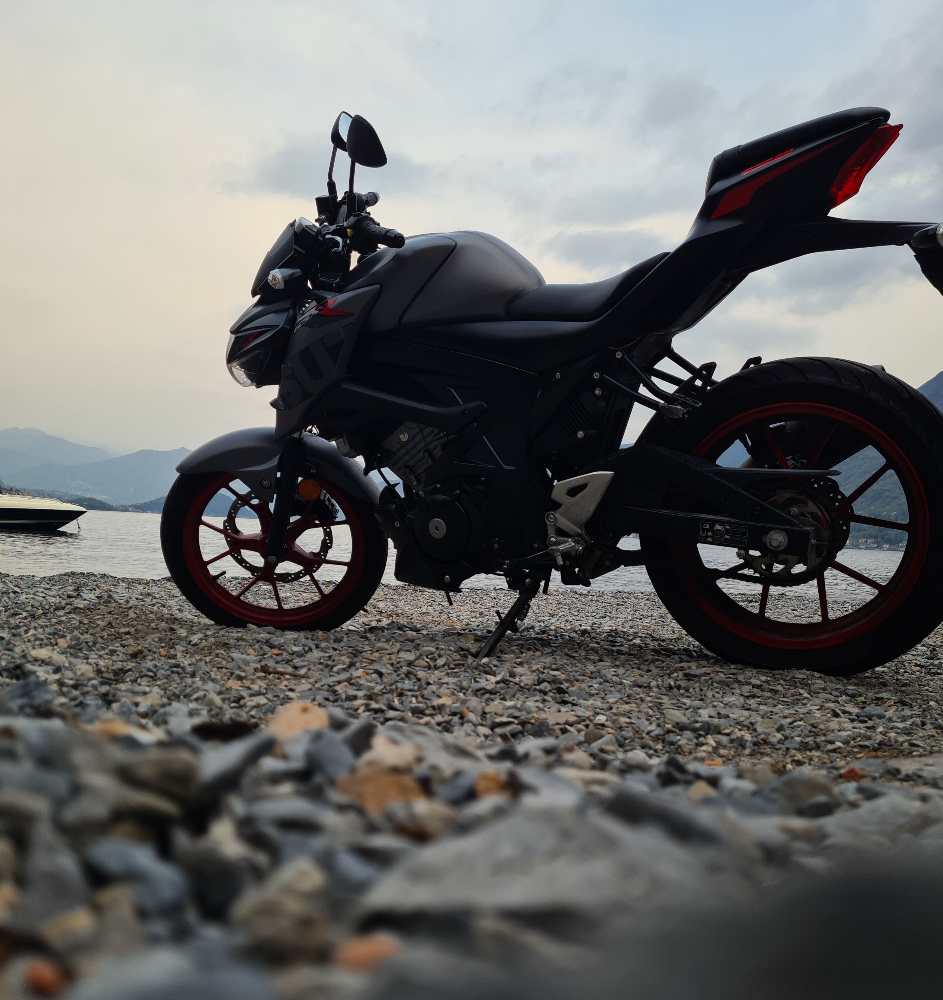

In recent years, football is the most coveted dream of all children because more and more often they say that they would like to become someone, have a lot of money or because they would like to become one of the best footballers. For me it was completely different because it was my brother who taught me the idea of football. Even though he has a handicap, when he was a child he always wanted to play football with me or with his friends because he loved it and still loves it and for this reason, every time we had free time, we went to the park and played; this is why when I was still little and in my last year of kindergarten I decided to play football. If you've already read about my life, you know that I also played basketball, so... why did I stop playing basketball and start playing football? Well, as a child my reasoning didn't make much sense, in fact during a basketball practice I had an injury and afterwards I thought "Hey, this sport is too dangerous and physical so why shouldn't I start another sport like football?" and it was at that moment that I changed sports and started thinking about becoming a footballer. I played in four teams:
● Rivalta, for two and a half years
● ASD Cittadella 1945, for five years
● Como Football Academy, for just one year
● B.C. Renate, for six years
● Alta Brianza, work in progress
The last one is the team I currently play for. The only one of these that plays in a professional league is Renate where I was able to play against important teams like Juventus, Milan, Inter and so on. In the last season in which I played at Renate I also had the opportunity to play in the first team and I did the pre-season retreat with them and sometimes I played with them both in the championship and in the Italian Cup and, at the end of last season , they gave me the uniform with my surname and the number they had chosen for me, three
Motorcycle... ahhhh wonderful word and wonderful world. Yeah... I know... every day everyone tell me that it is the most dangerous vehicle in the world because there is nothing that can protect me if I have an accident. Do you know what I tell them? or nothing or "Well, perfect, I won't have any accidents so there won't be any problems." Yes, I know it's a bit stupid phrase because no one wants to have an accident but life is very unpredictable but in this case I don't care. Do you know why I think that? No problem, I'll tell you in a minute. A few years ago, during a Moto GP, unfortunately a rider died in the race but I will always remember him for something he said in an interview: "You live more by riding for 5 minutes at most on a bike like this, more than some people do in their entire lives." I don't know why I love motorbikes so much, but I like it. No one in my family has ever had a motorbike and for me, getting my parents' consent was very difficult, especially my father's since he is the most scared because he knows how "easy" it is to have an accident and come off worse. Luckily, after a lot of prayers, I convinced them both and they bought me this bike (see the photo) she's my baby, lol, it is a GSX-S 125. Thanks to its I've met many people who have the same passion for motors as me and I've broadened my knowledge about motorbikes, places to visit, roads to travel with beautiful landscapes and perfect friends. Summer is the most best time of the year because I can go everywhere with the other biker, we often go around the lake where there is a very nice view. I believe that I will carry this passion with me throughout my life and I hope that one day I will be able to share it with my children

To be honest, I don't remember when I fell in love with IT, but I remember that, since I was a child, I always liked playing video games and I always tried to understand how it was possible to create something like this. Over the years this passion has grown with me and I tried to understand something more about it when I was in elementary school. Luckily for me, my father always had to use computer for his work and it was perfect because he was the first one who gave me my first "lesson", teaching me how to use the entire Office package. He started with Word, then PowerPoint (I loved it, I love it, I will always love it) and finally I learned Excel. Why do you think this was very important to me? Well, when I was in middle school I was one of the best classmates who knew very well how to use the Office package and some other PC functions, so teachers often sent me to another class to help other teachers or guys and this was precisely the starting point of my future, why? because I thought "I want to become a computer scientist because I love computer science". For this reason I decided to attend a high school where I could learn the basic knowledge known about it but during these five years of school I wanted to know more and more, so I looked for some free online courses on internet and I started building some websites with and without javascript to improve my skills. After all this I decided to attend USI to learn everything about IT as best as possible
Here there are some of my personal web site:
● A website for learning how to make them: Pane Buono
● A website for my high school friends (just for fun for Christmas break): L Fusa
● A website for a concert countdown, very simple and without any kind of detail: Marra's concert countdown